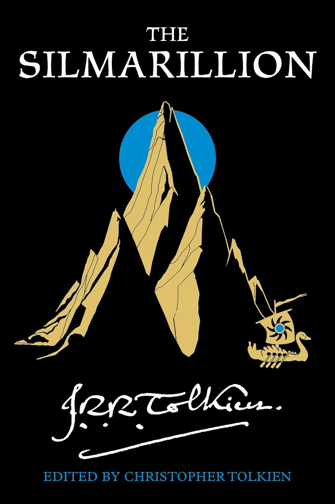
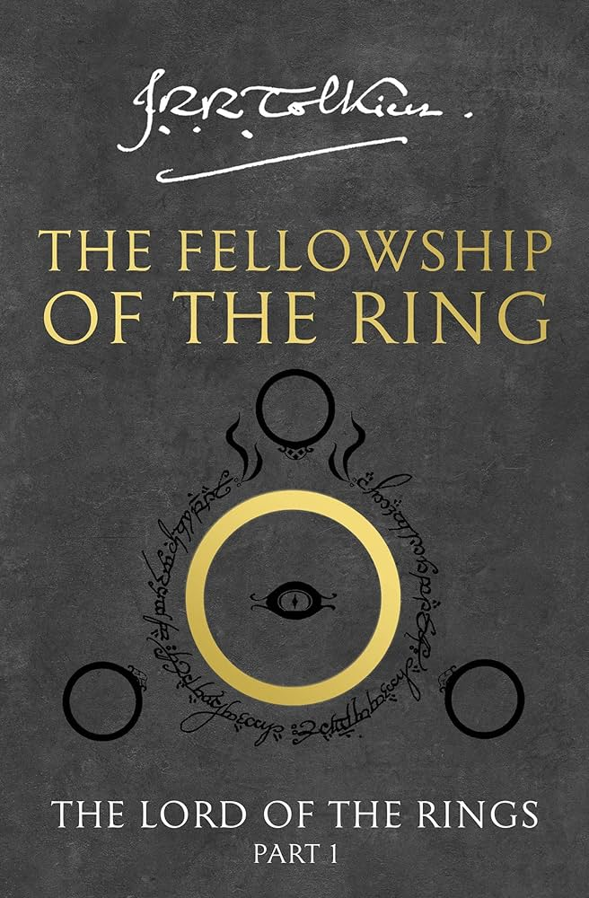
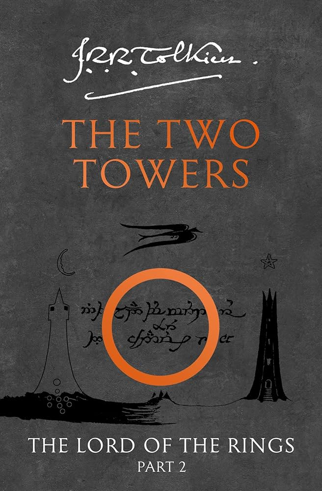
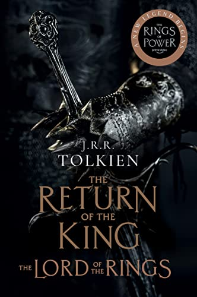

Alguns livros de J.R.R Tolkien

O Silmarillion
O Silmarillion, de J.R.R. Tolkien, é uma coletânea de histórias que narram a criação e os primeiros tempos da Terra Média, muito antes dos eventos de O Senhor dos Anéis. O livro começa com Ainulindalë, o mito da criação, onde Eru Ilúvatar, o deus supremo, cria seres angelicais chamados Ainur, que cantam o mundo à existência. Entre os Ainur, destaca-se Melkor, que, motivado pela ambição e pelo desejo de poder, começa a corromper a harmonia original, introduzindo o mal na criação.
Em seguida, O Quenta Silmarillion conta a história das Silmarils, três joias sagradas feitas pelo elfo Fëanor, que aprisionam a luz das Árvores de Valinor, as primeiras fontes de luz do mundo. Melkor, agora chamado Morgoth, rouba as Silmarils, o que leva à rebelião dos elfos contra os Valar (deuses) e à partida para a Terra Média, desencadeando uma série de conflitos conhecidos como as Guerras das Silmarils.
Os elfos travam batalhas épicas contra Morgoth, e heróis como Beren, Lúthien, Túrin e Eärendil surgem, cada um lutando e sacrificando-se contra as forças do mal. Embora Morgoth seja finalmente derrotado, seu legado de destruição perdura, e as Silmarils acabam dispersas pelo mundo, perdidas para sempre. O Silmarillion explora temas profundos de sacrifício, orgulho e redenção, revelando a origem e o destino de seres, reinos e objetos lendários que moldam a história da Terra Média.
O Hobbit
O Hobbit, de J.R.R. Tolkien, é uma aventura que acompanha a jornada do hobbit Bilbo Bolseiro, que vive tranquilamente em sua toca no Condado até ser convidado pelo mago Gandalf para uma missão inesperada. Junto a treze anões liderados por Thorin Escudo de Carvalho, Bilbo parte em busca do tesouro perdido dos anões, guardado pelo temível dragão Smaug, na Montanha Solitária. Inicialmente relutante e inexperiente, Bilbo vai, aos poucos, descobrindo sua própria coragem e engenhosidade.
No caminho, a companhia enfrenta trolls, goblins, lobos selvagens e aranhas gigantes, além de passar pelo reino dos elfos e pela perigosa Floresta das Trevas. Em uma caverna, Bilbo encontra um anel mágico que o torna invisível, após vencer o enigmático Gollum em um jogo de adivinhas. Este anel misterioso se tornará um dos objetos mais importantes da Terra Média e definirá o futuro de Bilbo e do mundo.
Ao final, Bilbo consegue infiltrar-se na Montanha Solitária e rouba uma taça do tesouro de Smaug, desencadeando eventos que levam à destruição do dragão pela população da Cidade do Lago. Após a queda de Smaug, um conflito surge entre os anões, elfos e homens pelo tesouro, mas a Batalha dos Cinco Exércitos se inicia quando goblins e lobos atacam, forçando todos a se unir contra uma ameaça comum. Retornando ao Condado com o anel e novas histórias, Bilbo volta um hobbit mudado, mais sábio e corajoso.

A Sociedade do Anel
O Senhor dos Anéis: A Sociedade do Anel é o primeiro volume da épica trilogia de fantasia escrita por J.R.R. Tolkien. A história se passa na Terra Média, um mundo habitado por elfos, anões, humanos e outras criaturas mágicas, e segue a jornada de Frodo Bolseiro, um hobbit que recebe um anel aparentemente comum de seu tio Bilbo. Logo, Frodo descobre que o objeto é o poderoso e perigoso Um Anel, que permite ao seu criador, Sauron, dominar toda a Terra Média. Sauron, porém, ainda não o possui, e a missão de Frodo é levar o Anel ao vulcão da Montanha da Perdição, onde ele pode ser destruído para sempre.
Para ajudá-lo, forma-se a Sociedade do Anel, composta por nove membros: quatro hobbits (Frodo, Sam, Merry e Pippin), o mago Gandalf, o elfo Legolas, o anão Gimli e dois homens, Aragorn e Boromir. Juntos, eles enfrentam muitos desafios, incluindo emboscadas de orcs, traições, disputas internas e o peso psicológico que o Anel exerce sobre os membros do grupo. Frodo, em especial, começa a sofrer com a influência maléfica do Anel, que tenta corrompê-lo.
No final do livro, a Sociedade é desfeita após um ataque que leva à morte de Boromir e ao sequestro de Merry e Pippin. Frodo decide continuar a missão sozinho, acompanhado apenas por seu fiel amigo Sam. A Sociedade do Anel estabelece os temas centrais da amizade, coragem e sacrifício, que marcam toda a trilogia de Tolkien, ao mesmo tempo em que constrói o início de uma jornada de proporções épicas.

As duas Torres
O Senhor dos Anéis: As Duas Torres é o segundo volume da trilogia de J.R.R. Tolkien, e continua a jornada de Frodo e a Sociedade do Anel após a separação do grupo. O livro é dividido em duas linhas narrativas principais. Na primeira, Frodo e Sam continuam sua perigosa jornada rumo a Mordor para destruir o Um Anel, guiados pela enigmática criatura Gollum, que também deseja o Anel para si. A desconfiança entre Sam e Gollum cresce, ao mesmo tempo em que Frodo se torna mais vulnerável à influência maligna do Anel.
Enquanto isso, Aragorn, Legolas e Gimli perseguem os orcs que sequestraram Merry e Pippin, e acabam se unindo ao reino de Rohan, liderado pelo Rei Théoden, que luta contra as forças de Saruman, um mago corrompido e aliado de Sauron. Merry e Pippin conseguem escapar dos orcs e encontram-se com os Ents, uma raça de seres semelhantes a árvores, liderados por Barbárvore. Os Ents, indignados com a destruição de suas florestas, decidem unir-se à guerra e marchar contra Saruman, resultando na destruição de Isengard.
No confronto final, Rohan enfrenta o exército de Saruman na Batalha do Abismo de Helm, com Aragorn e seus aliados desempenhando um papel crucial na vitória. Paralelamente, Frodo, Sam e Gollum aproximam-se cada vez mais de Mordor, mas o perigo aumenta com a traição iminente de Gollum, que planeja conduzi-los até Laracna, uma aranha monstruosa. As Duas Torres explora temas de lealdade, corrupção e esperança em meio à escuridão, estabelecendo um clima de tensão crescente e preparando o terreno para o confronto final em O Retorno do Rei.

O Retorno do Rei
O Senhor dos Anéis: O Retorno do Rei é o volume final da trilogia de J.R.R. Tolkien, que narra o desfecho da batalha contra Sauron pelo destino da Terra Média. O livro divide-se em duas tramas principais: a jornada de Frodo e Sam em Mordor para destruir o Um Anel e as batalhas travadas por Aragorn, Gandalf e seus aliados para conter o avanço das forças de Sauron.
Frodo e Sam, guiados por Gollum, enfrentam os últimos desafios em sua perigosa jornada, passando por grandes provações, como a traição de Gollum, que os leva ao covil da monstruosa aranha Laracna. Sam salva Frodo e eles avançam em direção à Montanha da Perdição, mas o peso do Anel se torna insuportável para Frodo. Paralelamente, Aragorn aceita seu destino como herdeiro de Gondor e lidera um exército contra Sauron. Ele se alia a Rohan, comandada pelo rei Théoden, e juntos enfrentam a ameaça de Mordor na épica Batalha dos Campos de Pelennor.
Durante a batalha, grandes atos de heroísmo ocorrem: Éowyn derrota o temido Rei-Bruxo de Angmar, e Théoden se sacrifica por seu povo. Com a vitória, Aragorn e seus aliados marcham até o Portão Negro de Mordor para distrair Sauron, dando uma última chance a Frodo de completar sua missão. No momento decisivo, Frodo sucumbe à tentação do Anel, mas Gollum, em uma luta, acaba caindo na lava da Montanha da Perdição com o Anel, destruindo-o e derrotando Sauron.
A paz é restaurada, Aragorn é coroado rei, e os hobbits retornam ao Condado. Entretanto, Frodo, profundamente marcado pela jornada, decide partir para as Terras Imortais com Gandalf e os elfos, simbolizando o fim de uma era. O Retorno do Rei encerra a trilogia com uma mensagem poderosa de sacrifício, coragem e renovação.